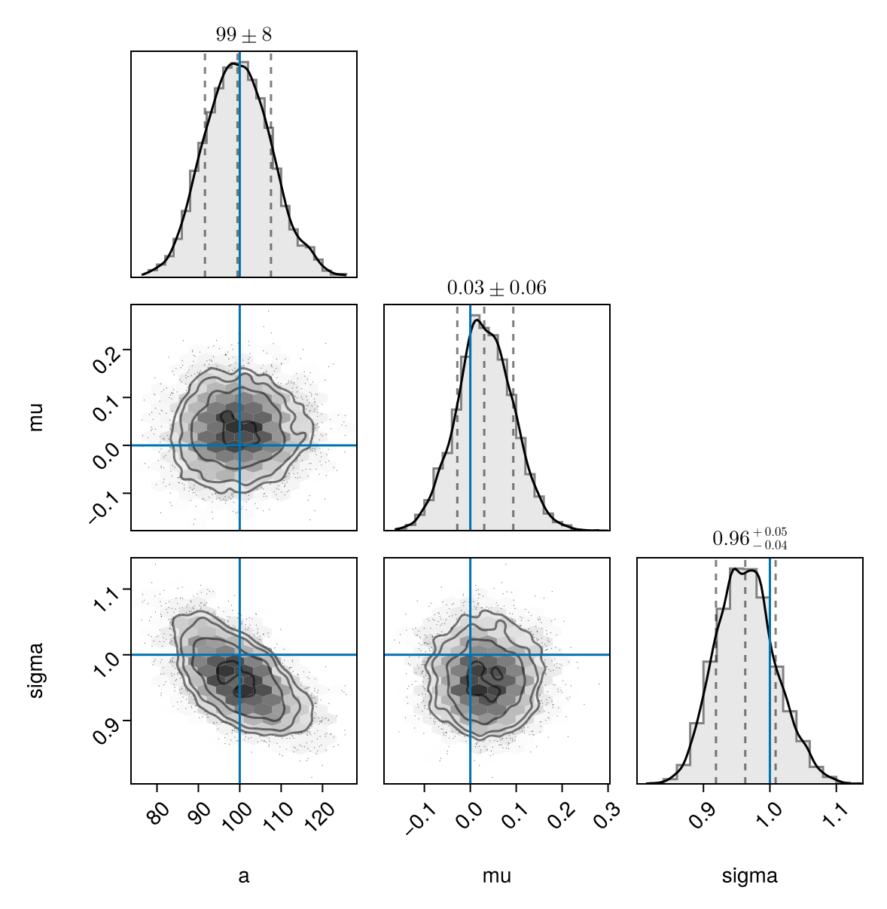

## [Fitting Hierarchical Bayesian Models With Selection Effects in Astronomy](https://farr.github.io/FWAM2024HierarchicalSelection/) [Will M. Farr](https://farr.github.io) CCA 2024-10-24 https://farr.github.io/FWAM2024HierarchicalSelection/ --- ## Test Slide 1 Some text:  --- # Develop Poisson Model --- # Observational Uncertainty --- # Selection Function --- # Intractible Integrals --- # LIGO Data Products --- # LIGO Results --- # some math: `$$\frac{\mathrm{d} N}{\mathrm{d} L} = \frac{\phi_0}{L} \left( \frac{L}{L_*} \right)^{-\alpha} \exp \left( -\frac{L}{L_*} \right)$$`